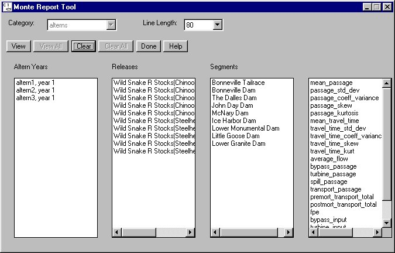

Monte Data Report: Monte Report Tool
Selecting Analysis Monte Data Report opens the Monte Report Tool for generating summary reports from Monte Carlo runs that are tailored to individual needs.
Monte Data Report opens the Monte Report Tool for generating summary reports from Monte Carlo runs that are tailored to individual needs.
Monte Report Tool features
- Category: Unavailable.
- Line Length: Specifies the line length of data written to the Output Window.
- View: Opens the Output Window, a text window of the parameters selected in the currently highlighted category.
- View All: Unavailable.
- Clear: Clears highlighted selections in all four columns.
- Clear All: Unavailable.
- Done: Closes Monte Report Tool.
- Help: Displays context-sensitive help information.
- Altern Years: Select the alternative years of interest from the list of alternatives available for analysis in the COMPASS home directory.
- Releases: Select the releases of interest from the list of releases that are available for analysis.
- Segments: select the segments of interest from the list of sites that are available for analysis. The list is based on sites where data was stored in the Monte Carlo runs. This column lists ALL sites present in ANY of the alternatives; some alternatives may not have the same sites as others, and the report tool will skip lines or leave output values blank for those cases.
- Parameters: Select the parameters of interest from the list of parameters that are available for analysis. Similar to Segments, this list includes all parameters present in any of the alternatives, so some parameters may not be available for some alternatives.
The amount of time required to generate output from this tool depends on the number of alternatives and the number of games in each alternative. COMPASS keeps in memory the selections made in the Monte Report Tool for the duration of the session or until selections are cleared by clicking Clear. This is to facilitate generating reports of the same parameters for multiple Monte Carlo runs. During a session, COMPASS attempts to preserve sensible selections if new model runs are performed, alternatives are deleted, or the working directory is changed.

Monte Report Tool for generating model output reports
- mean_passage, passage_std_dev, passage_coeff_variance, passage_skew, passage_kurtosis: Statistics for the survival of the release for the passage point.
- mean_travel_time, travel_time_std_dev, travel_time_coeff_variance, travel_time_skew, travel_time_kurt: Statistics for the travel time of the release from the point of release to the passage point.
- average_flow: An average water flow at the indicator dam during passage of the various stocks if a Flow Ind. dam was selected in RunOutput Settings. The average is taken over the period of time in which the fish traveled from release to the passage point. Only one dam can be selected as the flow indicator.
- bypass_passage: Percent of the release that survived that passed the dam through the bypass.
- turbine_passage: Percent of the release that survived that passed the dam through the turbine.
- spill_passage: Percent of the release that survived that passed the dam through the spillway.
- transport_passage: Percent of the release that survived transport collection at the dam.
- premort_transport_total: Number of fish in the release which were captured for transport.
- postmort_transport_total: Number of fish in the release which survived transport to the release point.
- fpe: Fish passage efficiency.
- bypass_input: Percent of the release that entered the bypass route.
- turbine_input: Percent of the release that entered the turbines.
- spill_input: Percent of the release that entered the spillway.
- project_input: Number of fish entering the dam segment.